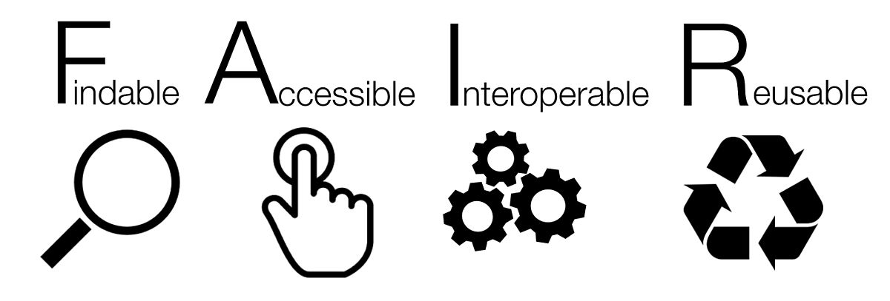

3.3 Estándares y experiencias internacionales
Para poder generar una ciencia social más colaborativa y eficiente, es necesario que la comunidad de las ciencias sociales compartan estándares respecto a la calidad de los datos y del almacenamiento. De este modo los trabajos de investigación y los materiales, de por sí complejos, serán más fáciles de comprender y ser utilizados por terceros.
En esta sección de revisarán algunas declaraciones de instituciones relacionadas con la apertura y mantenimiento de los datos, además de documentos que fijan normas comunes para el almacenamiento. Posteriormente, se evaluan distintos repositorios a partir de los criterios de calidad sistematizados, buscando ventajas y desventajas de distintas experiencias en el almacenamiento de bases de datos de investigación social. El resultado final es una propuesta de almacenamiento acorde a los estándares internacionales y un manual que facilite a los usuarios seguir estos estándares.
Los estándares internacionales revisados son los siguientes:
Acceso abierto ICSU
FAIR
DMP
3.3.1 Estándares internacionales
3.3.1.1 Acceso abierto ICSU
El Consejo Internacional para la Ciencia (ICSU, 2014) defiende los siguientes objetivos para la apertura. El registro científico debe ser:
libre de barreras financieras a las que pueda contribuir cualquier investigador;
libre de barreras financieras para que cualquier usuario acceda inmediatamente después de la publicación;
disponible sin restricción de reutilización para cualquier propósito, sujeto a atribución adecuada;
calidad garantizada y publicada de manera oportuna; y
archivado y disponible a perpetuidad
3.3.1.2 Principios FAIR: Datos, Metadatos e infraestructura digital.
Los principios de almacenamiento FAIR (Findable, Accessible, Interoperable, Reusable), son ampliamente reconocidos a nivel mundial. Estos principios han sido promovidos por organizaciones científicas regionales como El Foro Abierto de Ciencias de América Latina y el Caribe (CILAC) (Ramírez & Samoilovich, 2019) y Europeas (EC, 2016). En Chile, la ANID del Ministerio de Ciencia, Tecnología, Conocimiento e Innovación, ha señalado que la política de acceso a datos que impulsará se guiará por los principios FAIR (para más detalles ver Capítulo V).
Los principios FAIR, son sumamente compatibles con las diversas formas de información producida por las ciencias sociales, ya sean documentos de texto, audiovisuales o bases de datos. Este es un buen motivo para fomentar los principios FAIR en todos los tipos de investigaciones en ciencias sociales.
El objetivo general de estos principios es que los productos de investigación estén disponibles en la web, de modo tal que puedan ser buscados directamente por investigadores o por inteligencia artificial (FAIR, 2020). A continuación, se explican estos principios y como pueden ayudar a las ciencias sociales.

Los principios se refieren a tres tipos de entidades: “datos” (o cualquier producto de investigación como objeto digital), “metadatos” (información sobre ese objeto digital) e infraestructura digital (Capacidades y herramientas necesarias en repositorios web).
Findable (“Encontrables”)
El primer paso para (re) usar datos es encontrarlos. Los metadatos y los datos deben ser fáciles de encontrar tanto para humanos como para computadoras. Los metadatos legibles por máquina son esenciales para el descubrimiento automático de conjuntos de datos y servicios, por lo que este es un componente esencial para alcanzar el estándar de los principios FAIR. A continuación se enumeran cuatro características claves de los principios FAIR para encontrar los datos.
F1. A los datos se les asigna un identificador único y persistente a nivel mundial.
F2. Los datos se describen con metadatos enriquecidos (definidos por R1 a continuación)
F3. Los metadatos incluyen de forma clara y explícita el identificador de los datos que describen
F4. Los datos y metadatos se registran o indexan en un recurso de búsqueda
Por un lado, los identificadores únicos eliminan la ambigüedad, facilitando que una investigación, una base de datos o cualquier producto de investigación, no sea confundido con otro producto por tener un nombre o características similares.
Los ejemplos más comunes de identificadores son los URL (Localizador Uniforme de Recursos) los cuales asignan un sitio único a cada página web, como los URL “www.google.com” o “www.youtube.com”. Otro tipo de identificadores más cercano a las ciencias sociales son los ISBN (Número Internacional Normalizado del Libro) o el DOI (Identificador de Material Digital) que solemos ver asociados a los artículos de investigación. A diferencia del URL el DOI no cambia, aunque el material cambie de ubicación en la web. Así, los identificadores se asocian de forma única a los datos, como es el ejemplo de este DOI https://doi.org/10.5064/F6HTXF0H que corresponde al identificador de un conjunto de materiales y Focus Groups sobre género y participación en el desarrollo comunitario en Senegal.
Estos identificadores también ayudarán a que el trabajo sea fácilmente compartido, reconocido y posea un mayor impacto. En la misma línea, facilita su citación puesto que, al ingresar estos identificadores en gestores de bibliografía como Zotero, se genera una referencia bibliográfica automática.
Para generar un identificador único se pueden usar páginas especializadas que pueden encontrarse en DoiChile. También, para facilitar el trabajo, muchos repositorios de datos generarán automáticamente identificadores persistentes y únicos a nivel mundial para los conjuntos de datos depositados.
Por otro lado, los metadatos son información sobre los datos. Los archivos comunes poseen metadatos automáticos, por ejemplo, Microsoft Word registra el creador y la fecha. Los principios FAIR, señalan la importancia de incluir metadatos generosos y extensos, incluida información descriptiva sobre el contexto, la calidad y condición, o las características de los datos. En ciencias sociales es importante entregar información sobre la muestra y el proceso de recopilación de datos, así como cualquier información útil para que el investigador que recurra a ellos pueda tomar decisiones correctas.
Finalmente, junto con los identificadores y los metadatos, para que los datos sean fáciles de encontrar es necesario que estén disponibles en algún recurso de búsqueda. Google es el recurso de búsqueda más conocido. Para los datos de ciencias sociales es importante que estas bases de datos se encuentren disponibles en buscadores de instituciones de investigación o bibliotecas.
Accesibles
- A1. Los datos y metadatos son recuperables por su identificador utilizando un protocolo de comunicaciones estandarizado
Esto significa que los identificadores permiten la redirección a una página web específica que contiene los datos, esto se puede ver en el identificador cuando posee un http al comienzo de la URL. De este modo, basta con poner el identificador en la barra del navegador para poder acceder a la página de los datos mediante solo “un click”.
- A1.1 El protocolo es abierto, gratuito y de implementación universal
Este sub-punto refiere a que la forma en que se puede acceder a la pagina web mediante el identificador es universal, es decir, cualquier persona con un computador e internet puede acceder. Lo contrario a esto sería dejar el documento en un sitio web que sea pagado o que no esté disponible a nivel mundial.
- A1.2 El protocolo permite un procedimiento de autenticación y autorización, cuando sea necesario
Además, el modo por el cual se accede a los datos mediante el identificador puede tener algunas solicitudes o exigencias para el usuario. Así, FAIR no es sinónimo de OpenData, pues se puede tener un dato altamente restringido por distintas razones, pero si se especifican bien las condiciones para su acceso, entonces un dato no “abierto” puede ser FAIR.
- A2 . Los metadatos son accesibles, incluso cuando los datos ya no están disponibles
Suele ocurrir que los datos en internet desaparecen por que mantenerlos implica un costo. Este punto señala como necesario que, pese a que desaparezcan los datos, los metadatos, que son más fáciles y económicos de almacenar, deben ser persistentes, es decir, deben mantener su existencia en la web.
Interoperables
Los datos normalmente deben integrarse con otros datos. Además, los datos deben interoperar con distintas aplicaciones o flujos de trabajo para análisis, almacenamiento y procesamiento. Para que esto sea posible, es necesario que los datos se encuentren en formatos que sean legibles y trabajables por distintos softwares.
- I1. Los datos y metadatos utilizan un lenguaje formal, accesible, compartido y de amplia aplicación para la representación del conocimiento.
Para que los datos puedan ser encontrados por las herramientas como barras de búsqueda es necesario que los términos utilizados en los metadatos para describir el estudio sean parte de un vocabulario controlado, los cuales sirven para sistematizar los sinónimos dentro de un campo temático (Collins, 2015). Esto permite que, al buscar un término, por ejemplo “relaciones de pareja” en un repositorio de materiales de investigación también aparezcan aquellos materiales que son descritos con el término “noviazgo”. Los vocabularios controlados utilizados por repositorios de investigación suelen ser denominados también tesauros u ontologías.
Además es necesario que los metadatos estén estructurados en base a esquemas comunes. Al respecto existen múltiples modos de organizar los metadatos como DDI, Dublin Core, JSON, entre otros. Sin la intención de profundizar en el tema es necesario señalar que no existen amplios consensos en el uso de un estándar de metadatos en ciencias sociales y humanidades (Gómez et al., 2016), por lo cual se considera adecuado que un repositorio permita almacenar los metadatos en distintos formatos.
- I2. Los datos y metadatos usan vocabularios que siguen los principios FAIR
Es importante que los vocabularios controlados utilizados para la descripción de los datos sigan principios FAIR, es decir, posean identificadores y metadatos adecuados para poder localizar el vocabulario controlado al que se hace referencia.
Un ejemplo de vocabulario controlado que sistematiza los sinónimos de distintos idiomas para “journal article” se puede encontrar aquí. Este ejemplo cumple en buena medida con los principios FAIR
- I3. Los datos y metadatos incluyen referencias calificadas a otros datos y metadatos
Los datos y la información referida a ellos deben tener múltiples vínculos web que permitan acceder a información asociada. Por ejemplo, si tenemos una investigación que ha utilizado datos de una encuesta publicada, se debe hacer alusión a dicha encuesta a partir de su identificador. Del mismo modo se puede tener vínculos con instituciones asociadas, o páginas de proyectos de investigación propias o estatales.
Reutilizables
Los metadatos y los datos deben estar bien descritos para que puedan replicarse y/o combinarse en diferentes entornos.
- R1. Los datos y metadatos se describen detalladamente con una pluralidad de atributos precisos y relevantes
Para que un usuario decida si utilizar los datos o no, debe contar con una gran cantidad de información detallada. Este punto es similar a F2 (Metadatos suficientes), pero destaca la importancia de información particular del campo de uso. Para ello, en ciencias sociales, es importante describir cuándo fue realizada la muestra, a quienes se le aplica, si posee control de variables experimentales, entre otras informaciones relevantes. Se debe señalar la mayor información posible, incluyendo tipo de muestreo, intención de la creación de la base de datos, entre otros. Esta información debe ser plural para fomentar el uso más allá de las ciencias sociales.
- R1.1. Los datos y metadatos se publican con una licencia de uso de datos clara y accesible
Se recomienda en general utilizar licencias Creative Commons, estas licencias permiten a los dueños de los materiales dejar a libre disposición los datos producidos, aunque señalando aquellas condiciones en las cuales se pueden utilizar y aquellas en que no. Esta es una condición más legal que técnica para la reutilización de los datos.
- R1.2. Los datos y metadatos están asociados con la procedencia detallada
Este punto refiere a entregar información sobre los productores y el flujo de trabajo. También en este punto se debe destacar cómo se debe citar la base de datos. Entonces, se deben responder las siguientes preguntas ¿Quién estuvo a cargo del diseño? ¿Quién a cargo del terreno y la aplicación? ¿Quién editó los datos? ¿Cómo desea que este material esté referenciado?
- R1.3 . Los datos y metadatos cumplen con los estándares comunitarios relevantes para el dominio
Los datos y los metadatos deben estar nombrados y ordenados de modo coherente con los estándares de las ciencias sociales. Por ejemplo, las bases de datos deben estar estructuradas de tal modo que los sujetos sean las filas y las variables las columnas. La documentación que se entrega está nombrada con términos comunes, como manual de usuario o cuestionario.
Según la investigación de Gómez et al. (2016), el esquema metadatos más utilizados en las ciencias sociales es el de DDC. No obstante, existe una gran divergencia respecto a cuales deben ser los metadatos incluidos.
3.3.1.3 DMP
Los planes de manejo de datos (DMP) son una herramienta utilizada por la comisión europea (EC) para mejorar la producción y almacenamiento de datos producidos por investigaciones, consiste en una planificación respecto al ciclo de vida de los datos desde su creación hasta su preservación. En este sentido son una herramienta para la organización y estandarización del manejo de datos.
En un documento de apoyo para investigadores la EC (2016), a modo de síntesis, proponen documentar los siguientes puntos respecto al manejo de los datos
- Resumen de datos
- Indique el propósito de la recopilación / generación de datos
- Explicar la relación con los objetivos del proyecto.
- Especificar los tipos y formatos de datos generados / recopilados
- Especifique si los datos existentes se están reutilizando (si corresponde)
- Especificar el origen de los datos
- Indique el tamaño esperado de los datos (si se conoce)
- Describa la utilidad de datos: para quién será útil
- Datos FAIR
2.1. Haciendo que los datos se puedan encontrar, incluidos disposiciones para metadatos
- Describir la capacidad de descubrimiento de datos (provisión de metadatos)
- Resuma la identificabilidad de los datos y consulte el mecanismo de identificación estándar. ¿Utiliza identificadores persistentes y únicos como los identificadores de objetos digitales?
- Esquema de convenciones de nomenclatura utilizadas
- Describa el enfoque hacia las palabras clave de búsqueda
- Describir el enfoque para versiones claras
- Especificar estándares para la creación de metadatos (si los hubiera). Si no hay estándares en su disciplina describe qué tipo de metadatos se crearán y cómo se hará.
2.2 Hacer que los datos sean accesibles abiertamente
- Especifique ¿qué datos estarán disponibles abiertamente? Si algunos datos se mantienen cerrados, proporcione justificación para hacerlo
- Especificar cómo estarán disponibles los datos
- Especifique qué métodos o herramientas de software se necesitan para acceder a los datos. ¿Es necesaria la documentación sobre el software para acceder a los datos incluidos? Es posible que incluir el software relevante sea necesario (por ejemplo, en código fuente abierto)
- Especificar dónde están los datos y los metadatos asociados, la documentación y el código depositado
- Especifique cómo se proporcionará el acceso en caso de que haya restricciones
2.3. Hacer que los datos sean interoperables
- Evalúe la interoperabilidad de sus datos. Especifique qué vocabularios de datos y metadatos, estándares o metodologías que seguirá para facilitar la interoperabilidad.
- Especifique si utilizará vocabulario estándar para todos los tipos de datos presentes en su conjunto de datos, para permitir la interoperabilidad interdisciplinaria. Si no es así, ¿proporcionará un mapeo para ontologías de uso más común?
2.4. Incrementar la reutilización de datos (mediante aclarar licencias)
- Especificar cómo se licenciarán los datos para permitir la mayor reutilización posible
- Especifique cuándo los datos estarán disponibles para su reutilización. Si corresponde, especifique por qué y por qué período se necesita un embargo de datos
- Especificar si los datos producidos y / o utilizados en el proyecto son utilizables por terceros. En particular después de la finalización del proyecto, si la reutilización de algunos datos es restringido, explica por qué
- Describir los procesos de aseguramiento de la calidad de los datos.
- Especifique el período de tiempo durante el cual los datos permanecerán reutilizables
- Asignación de recursos
- Estime los costos para hacer que sus datos sean FAIR. Describa cómo piensa cubrir estos costos
- Identifique claramente las responsabilidades de la gestión de datos en su proyecto
- Describir los costos y el valor potencial de la preservación a largo plazo.
- Seguridad de los datos
- Abordar la recuperación de datos, así como el almacenamiento seguro y la transferencia de datos sensibles.
- Aspectos éticos
- Para ser cubierto en el contexto de la revisión de ética, sección de ética de DoA y ética entregables. Incluya referencias y aspectos técnicos relacionados.
- Otro
- Consulte otros procedimientos nacionales / financiadores / sectoriales / departamentales para la gestión de datos.
3.3.2 Experiencias internacionales sobre el almacenamiento de datos de investigación
En el presente apartado presentamos un conjunto de repositorios digitales de materiales de investigación. Se realizarán comentarios, evaluaciones y destacarán aportes de estos repositorios digitales. Para ordenar su presentación primero revisaremos aquellas experiencias internacionales que han destacado como las mejores en el ámbito. Luego veremos algunas experiencias a nivel latinoamericano y chileno, para evaluar sus fortalezas y debilidades en base a los criterios y estándares presentados en la sección anterior.
3.3.3 Exitosos repositorios internacionales
ICPSR
Este es un consorcio internacional de más de 750 instituciones académicas y organizaciones de investigación, el Consorcio Interuniversitario de Investigación Política y Social (ICPSR) proporciona liderazgo y capacitación en acceso a datos, curación y métodos de análisis para la comunidad de investigación en ciencias sociales.
ICPSR mantiene un archivo de datos de más de 250.000 archivos de investigación en las ciencias sociales y del comportamiento. Alberga 21 colecciones especializadas de datos en educación, envejecimiento, justicia penal, abuso de sustancias, terrorismo y otros campos.
Qualitative Data repository
El repositorio de datos cualitativos (QDR) es un archivo dedicado a almacenar y compartir datos digitales (y la documentación adjunta), generados o recopilados a través de la investigación cualitativa y de múltiples métodos en las ciencias sociales. QDR proporciona servicios de consultoría en gestión de datos y selecciona activamente todos los proyectos de datos, manteniendo el valor y la utilidad de los datos a lo largo del tiempo y asegurando su disponibilidad y posibilidad de encontrarlos para su reutilización.
Este repositorio cuenta con un identificador indicado en metadatos contundentes que además están indexados en un buscador web. También poseen un protocolo de comunicación estandarizado, además de poseer medios para la autorización del uso del material.
Además, la página facilita el uso permitiendo previsualizaciones de los documentos que se encuentra abiertos, recurso que se encuentra igualmente en los otros buenos ejemplos de repositorios de datos.
Otra temática importante que es trabajada por este repositorio es su apoyo en el hacer anónimos los datos, lo cual da cuenta de un compromiso por resguardar la seguridad de los investigadores y apoyarles como sugiere necesario el documento de Autoevaluación RISE.
UK Data Service
El Servicio de Datos del Reino Unido está financiado por el Consejo de Investigación Económica y Social (ESRC) para satisfacer las necesidades de datos de investigadores, estudiantes y profesores de todos los sectores, incluidos el mundo académico, el gobierno central y local, organizaciones benéficas y fundaciones, centros de investigación independientes, grupos de expertos y consultores empresariales y del sector comercial.
La recopilación del Servicio de datos del Reino Unido incluye las principales encuestas patrocinadas por el gobierno del Reino Unido, encuestas transnacionales, estudios longitudinales, datos del censo del Reino Unido, agregados internacionales, datos comerciales y datos cualitativos.
Dataverse Harvard
El Proyecto Dataverse es una aplicación web de código abierto para compartir, preservar, citar, explorar y analizar datos de investigación. Facilita la puesta a disposición de los datos y le permite replicar el trabajo de otros con mayor facilidad. Los investigadores, las revistas, los autores de datos, los editores, los distribuidores de datos y las instituciones afiliadas reciben crédito académico y visibilidad en la web.
De este modo, Dataverse no solo apoya el proceso de almacenamiento de materiales e información para la investigación sino que también posibilita el almacenamiento de códigos para la reproducibilidad, comprendida como la posibilidad de volver a ejecutar un análisis con los mismos datos y mismos procedimientos usualmente especificados en códigos.
Un repositorio de Dataverse es la instalación del software, que luego aloja varios archivos virtuales llamados colecciones de Dataverse. Cada colección de Dataverse contiene conjuntos de datos, y cada conjunto de datos contiene metadatos descriptivos y archivos de datos (incluida la documentación y el código que acompañan a los datos). Como método de organización, las colecciones de Dataverse también pueden contener otras colecciones de Dataverse.
3.3.4 Experiencia regional
LAPOP.
Según su propia página web (LAPOP, 2020) LAPOP es la principal institución académica que realiza encuestas de opinión pública en las Américas, con más de 30 años de experiencia. Como centro de excelencia en investigación por encuestas, LAPOP usa enfoques y métodos innovadores con los “estándares más altos” para llevar a cabo encuestas nacionales; conducir estudios de evaluación de impacto, y producir reportes acerca de las actitudes, evaluaciones y experiencias de los individuos. El Barómetro de las Américas es la única encuesta comparativa y científicamente rigurosa que cubre 34 naciones incluyendo Norte, Centro y Sur América, así como también, un significativo número de países en el Caribe. Cada año publica docenas de estudios académicos de alta calidad y artículos de relevancia para la elaboración de políticas públicas.
Cabe destacar que si bien esta es una experiencia de almacenamiento de datos para investigaciones, posee algunas diferencias. Por ejemplo es una plataforma solo para almacenar encuestas del proyecto LAPOP y no así de otras investigaciones afines. Por ello los servicios de clasificación de datos y priorización no son tan importantes por que no se posee un volumen tan grande de datos.
Plataforma integrada de datos del MINCYT Argentina
A partir de la información recopilada por el foro CILAC, se puede decir que en algunos países del continente los gobiernos están realizando esfuerzos por fomentar la apertura de los datos. Por ejemplo, en argentina, a partir de una nueva ley de Acceso abierto, se propuso una plataforma integrada para el acceso a datos. Esta plataforma entrega información sobre distintas disciplinas. Entre estos trabajos, el más cercano a las ciencias sociales son los Datos de personal de ciencia y tecnologia, que permite hacer análisis sociodemográfico de los académicos. Esta plataforma posee una previsualización y una tabla con las variables que facilita el conocimiento de los datos, los cuales están disponibles para descargar en distintos formatos. Esta previsualización se puede realizar a modo de tablas, gráficos y mapas. No obstante, la visualización mediante gráficos es relativamente ineficiente, puesto a que es difícil lograr gráficos que sean comprensibles.
3.3.5 Experiencias nacionales.
Hace bastantes años que a nivel nacional se realizan esfuerzos por fomentar el registro abierto de datos. La antigua Comisión Nacional de Investigación Científica y Tecnológica (CONICYT), en la página Datos Cientificos (Programa de Información Científica, 2019), realiza una propuesta de política para datos abiertos. El primer punto de dicha propuesta exige a todos los beneficiarios de CONICYT la publicación de informes con datos producidos de la investigación. En favor de dicha política se publicaron el año 2010 y 2014 dos documentos con sugerencias para la apertura de los datos.
El primero de estos informes es una revisión del estado del arte de la accesibilidad de datos (Muñoz, 2010). se destacan las siguientes recomendaciones.
A partir de la experiencia de las Políticas de Intercambio de Datos Científicos en China se evidenció la dificultad de desarrollar una política nacional de gestión cuando en la cultura científica local persistió la idea de propiedad personal. Por ello, es fundamental realizar políticas de concientización respecto a los datos abiertos.
En base a la recopilación de datos epidemiológicos del National Center for Health Statistics de Estados Unidos, se releva la importancia de preparar alternativas para datos sensibles. Considerando la naturaleza de los datos, es necesario en algunas ocasiones mantener los datos en la mayor confidencialidad posible. En esta línea, la organización mencionada junto con dejar los datos de acceso abierto, mantuvieron algunos datos en privado a los cuales solo se puede acceder en base a una solicitud con una propuesta de investigación y mediante una plataforma que posibilita cálculos sin permitir el acceso directo a los datos ni su transferencia. Es fundamental identificar aquellas investigaciones que requieren un resguardo mayor de datos y generar protocolos para su uso.
El segundo documento, escrito el 2014, se denomina “Datos Científicos Abiertos La Ciencia la hacemos entre todos, Programa de Información Científica” (D. Hernández, 2014). Este informe posee la intención de ser un manual respecto a cómo abrir los procesos investigativos. Se destacan las siguientes recomendaciones:
Utilizar una licencia de Creative Commons: permiten autorizar el uso de terceros sin perder los derechos de atribución.
Utilizar repositorios interoperables: Para facilitar la recopilación automática de datos y el uso de estos desde distintos Software, se recomienda poseer buenos metadatos siguiendo los parámetros de interoperabilidad de Dublin Core. Los metadatos son “los datos sobre los datos” es decir aquella información que nos permite saber a qué corresponde la base de datos, quienes y cuando la crearon entre otras informaciones relevantes. Esta página propone una decena de metadatos indispensables para la interoperabilidad (Ej. creador, colaborador, editor, título, fecha, idioma, formato, tema, descripción, identificador, relación, fuente, tipo, cobertura y derechos, entre otros) (Dublin-Core, 2020). Si bien esta publicación no da cuenta de que metadatos debe ser específicamente utilizado a partir de la información anterior producida por lisa podemos decir que es beneficioso utilizar el conjunto de metadatos para social-science que es un conjunto bastante parsimonioso de información.
Centro de estudios públicos (CEP)
El Centro de Estudios públicos produce constantemente encuestas de opinión publica, con bastante contenido electoral. Esta es una de las bases de datos más conocidas en el campo de la sociología de Chile. Y en el último tiempo mejoro su plataforma de almacenamiento.
Ahora la página posee un buscador de datos, un espacio para descargar una base consolidada longitudinal con los distintos estudios y un recurso para realizar gráficos en línea, lo cual fomenta la utilización por el público no especializado. Además, como siempre, la página cuenta con material suficiente para utilizar las bases de datos como las fichas técnicas, documentos de resultados y las bases de datos en distintos formatos (SPSS, STATA y R). Respecto a las bases de datos, es de las pocas analizadas que codificó las etiquetas de la base de datos en UTF-8. Como aspectos negativos se puede señalar que no se cuenta con recurso para descargar metadatos ni posee un identificador único